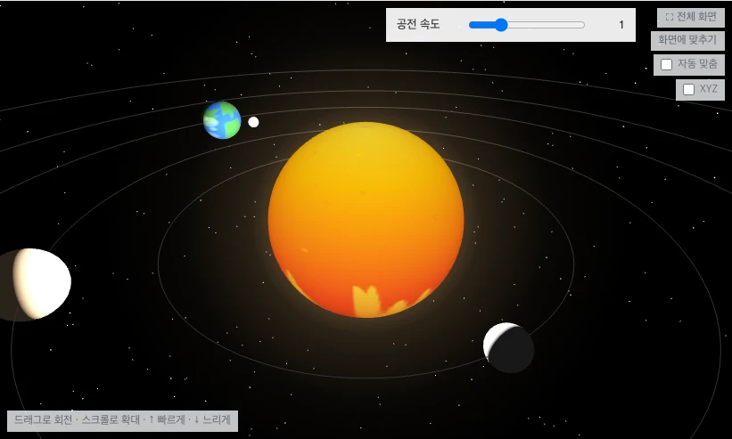
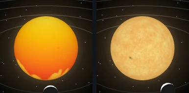

태양계와 혜성
실행 링크에서 편집기의 ▶ 버튼을 누르세요.
다섯 행성의 공전 Planetary orbits
표준 속도에서 수성이 한 바퀴 도는 10초를 녹화했습니다. Mercury completes one orbit in ten seconds at normal speed.

편집기에서 확대한 태양 광구 · Solar surface in the live editor
느린 연결에서 본 태양 Delayed texture load

같은 카메라로 JPG 도착을 늦춘 뒤 캡처한 수정 전(왼쪽)과 수정 후(오른쪽). Before and after a delayed image download.
같은 구도의 태양계
Pyctures의 태양계 화면 보기 ↗
다른 사람의 작품이라 그림을 이 페이지에 옮겨 싣지 않고 원래 주소로 연결합니다.
Pyctures · 참고한 구도
 VPyLab 초기 비교 캡처 · 시야각 55°, 같은 행성 반지름과 공전 거리. 위의 다섯 행성 실행에서 현재 태양 표면과 공전을 볼 수 있습니다.
VPyLab 초기 비교 캡처 · 시야각 55°, 같은 행성 반지름과 공전 거리. 위의 다섯 행성 실행에서 현재 태양 표면과 공전을 볼 수 있습니다.
움직이는 혜성 입자 Comet dust and ions
혜성 실행 ↗ · ‘핵 고정 · 입자 관찰’을 선택하면 핵과 카메라가 멈춥니다. 속도 0에서는 입자도 멈춥니다. Select the fixed-nucleus view to watch the two tails flow. Set speed to zero to pause.
이전 혜성 꼬리 비교
 개선 전 · 반투명 구와 한 줄로 그린 이온 꼬리
개선 전 · 반투명 구와 한 줄로 그린 이온 꼬리 개선 후 · 태양 반대쪽으로 뻗는 이온과 휘어지는 먼지
개선 후 · 태양 반대쪽으로 뻗는 이온과 휘어지는 먼지두 캡처는 같은 초기 시점과 카메라를 사용했습니다. 이전 버전은 시간이 지나면서 먼지가 쌓입니다. 새 버전은 첫 화면부터 입자 분포를 보여 줍니다.
목성의 구름 띠
 VPyLab · 위도별 구름 띠와 타원형 폭풍을 합성한 교육용 표면
VPyLab · 위도별 구름 띠와 타원형 폭풍을 합성한 교육용 표면
공작소 캐릭터 비교 Forge characters
각 줄에서 왼쪽은 기존 운영판, 오른쪽은 이번 수정판입니다. 같은 기본 Python 코드와 카메라로 실행했습니다. Production on the left, updated renderer on the right.
원본 Python · 만두 친구 · 공구상자 친구